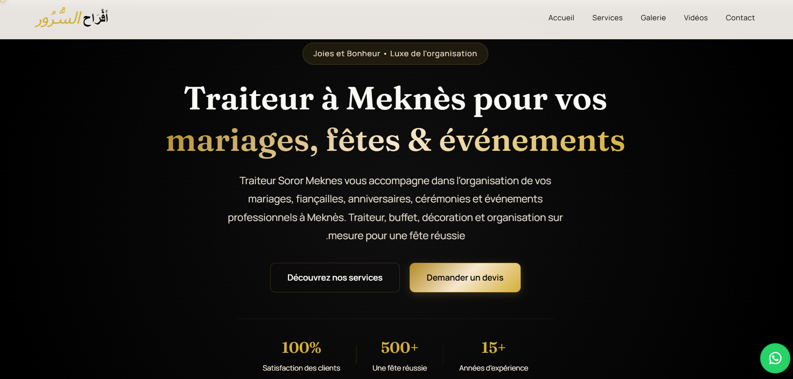
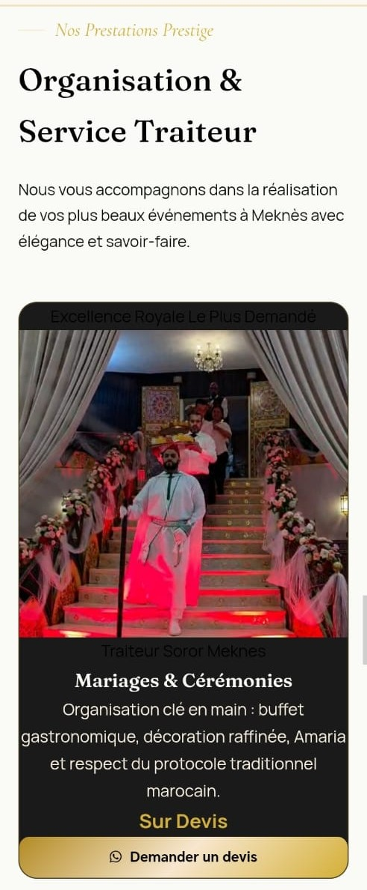
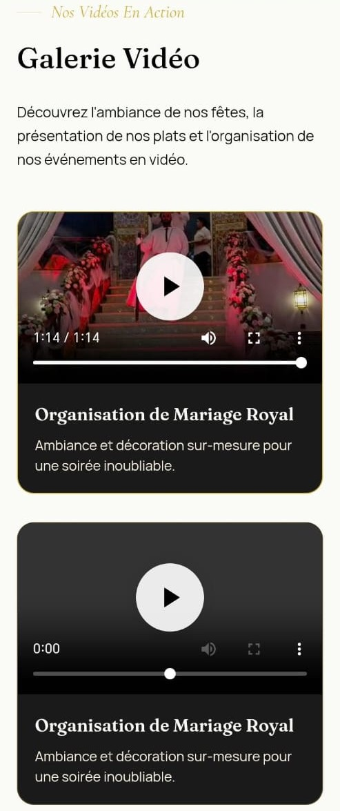

Avant
Contenu dispersé
- Photos publiées séparément
- Vidéos réparties sur les réseaux
- Pas de point central dédié au projet
Création d'une présence digitale professionnelle pour un traiteur événementiel à Meknès.

Traiteur Soror est un professionnel du secteur de la restauration et de l'événementiel à Meknès.
Avant la création du projet, l'activité ne disposait pas d'un site web dédié. Les photos et vidéos des prestations étaient principalement publiées sur Instagram et Facebook, de manière répartie entre les différentes plateformes.
L'objectif était donc de créer un espace digital centralisé permettant de présenter l'activité de manière plus claire, professionnelle et accessible.
Les informations et les contenus existaient déjà, mais ils étaient dispersés sur plusieurs réseaux sociaux.
Le défi n'était donc pas simplement de créer un site esthétique. Il fallait transformer ces contenus en une expérience cohérente permettant à un visiteur de comprendre rapidement l'activité, découvrir les services et accéder facilement aux moyens de contact.
Réunir les informations importantes dans un seul espace digital.
Mettre en valeur les prestations, photos et réalisations.
Offrir une expérience claire et adaptée aux smartphones.
Permettre au visiteur de contacter directement l'entreprise.
Pour une activité événementielle, la première impression peut faire toute la différence. Le site a donc été pensé comme un véritable support commercial : présenter l'activité avec sérieux, rassurer le prospect et faciliter le passage à la demande de devis.
Lorsqu'un prospect découvre une activité professionnelle, il ne regarde pas uniquement les prestations. Il évalue aussi le sérieux et la crédibilité de l'entreprise.
Le site offre ainsi à Traiteur Soror un espace professionnel où ses services, réalisations, photos et informations sont présentés de manière claire et structurée.
Au lieu d'envoyer plusieurs photos et informations séparément sur WhatsApp ou les réseaux sociaux, le prospect peut découvrir l'activité dans un seul espace.
Cette présentation permet au client potentiel de mieux comprendre l'offre et de se faire une première impression avant même de prendre contact.
Lorsqu'un prospect recherche un traiteur pour un événement important, il doit pouvoir évaluer rapidement les services, les réalisations et le sérieux du prestataire.
Le site devient alors un support commercial permettant de présenter l'activité de manière professionnelle et de faciliter les demandes de devis pour des prestations plus importantes.
Le site ne garantit pas automatiquement plus de ventes. Il donne surtout à l'entreprise une présence professionnelle capable de créer une meilleure première impression, renforcer la confiance et faciliter le passage au contact.
J'ai conçu et développé un site vitrine personnalisé autour de l'activité de Traiteur Soror, avec une approche orientée vers la présentation des prestations et la facilité de contact.
Une première impression claire avec des appels à l'action.
Les prestations sont présentées de manière structurée.
Les réalisations sont mises en avant visuellement.
Les contenus vidéo peuvent montrer l'ambiance des événements.
Un accès direct au contact et à la demande de devis.
Les visiteurs peuvent retrouver facilement l'activité.
Le design a été pensé pour conserver une navigation claire sur différents écrans et permettre au visiteur d'accéder rapidement aux informations importantes.


Le projet a été développé avec une approche légère et adaptée à un site vitrine moderne.
Le parcours a été pensé pour réduire les frictions et guider progressivement le visiteur vers la prise de contact.
Le projet a transformé une présence digitale auparavant répartie entre Instagram et Facebook en une plateforme web centralisée.
Les visiteurs disposent désormais d'un espace unique pour découvrir les services, consulter les réalisations et accéder directement aux moyens de contact.
Contenus utiles mais répartis sur plusieurs plateformes.
Une vitrine digitale unique, accessible depuis mobile et ordinateur.
Cliquez sur lecture pour lancer la piste audio.
Vous avez une entreprise, un commerce ou une activité locale et souhaitez présenter votre service de manière professionnelle sur Internet ?
Parlons de votre projet →